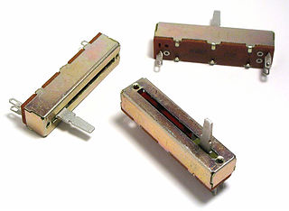
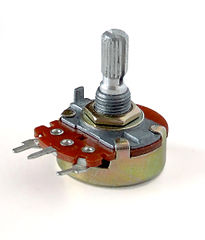
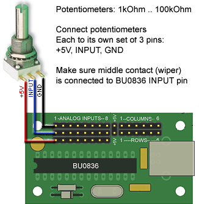
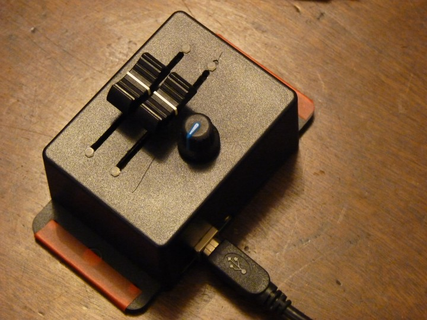
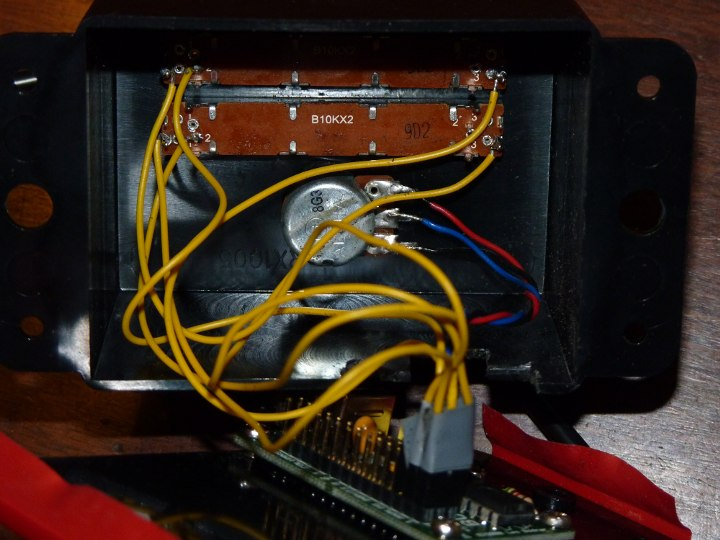

Using a simple USB interface chip, the BU0836, it is easy to construct your own throttle and wheel assembly with simple DIY and soldering skills
For more details of the BU0836, and how to buy one, please visit the maker's site. Reading this site will also be very useful in order to understand what you're doing when making your own controller set.
The BU0836 chip allows you to use variable resistors (potentiometer) to control an analog joystick channel. Therefore, you will need three variable resistors, one for each throttle lever, and one for the wheel. These should be linear (not logarithmic), and with a resistance somewhere around 10k (The exact value doesn't matter). If you wish, you can also use a button switch (push to make), which will sound your ship's horn. You will also need some wire to connect the parts.
For the variable resistors, you have two main options. You can either use a sliding or rotating potentiometers. For example in the UK, Maplin part numbers JM85GT or FW05F might be appropriate. A slider will be easier to use mechanically, but if you want to construct an accurate throttle lever, the rotating option may be better.

A sliding potentiometer (Creative Commons Share Alike, By Omegatron)

A rotating potentiometer (Creative Commons Attribution, By Iainf)
Using the connectors which come with the chip, connect up the three pins of the first variable resistor as shown:

Image: Leo Bodnar.
Then repeat this with the two other variable resistors, and connect the connectors to the three sets of pins on the left of the board.
If you want to add a horn button to your controller, connect a simple 'push to make' switch between any ground connection and the column 1 pin. The column 1 pin is 6th from the right at the top of the board, and the first ground pin is two pins to the left of this. The horn button is optional.
You should now be able to test the controller with Bridge Command. In the start menu area for Bridge Command, find the shortcut to 'Joystick Settings', under the 'Settings' sub-menu. Use this to change the 'use joystick' setting from 0 to 1 to enable Bridge Command's joystick capabilities. Now, connect the BU0836 to your computer, and start up Bridge Command. Try changing the three variable resistors, and you should see their effect on the ship. If required, swap around the way they are connected, and if necessary also flip the connectors, so your resistors control the right engine or wheel, and act in the right direction.
Once this test has been sucessful, you can build an enclosure and levers and wheel for your controller. In this you are only limited by your ingenuity, but a few pointers are below:
This simple example is made with two linear potentiometers for the engine controls, and a rotary pot for the rudder.

External view

Internal view